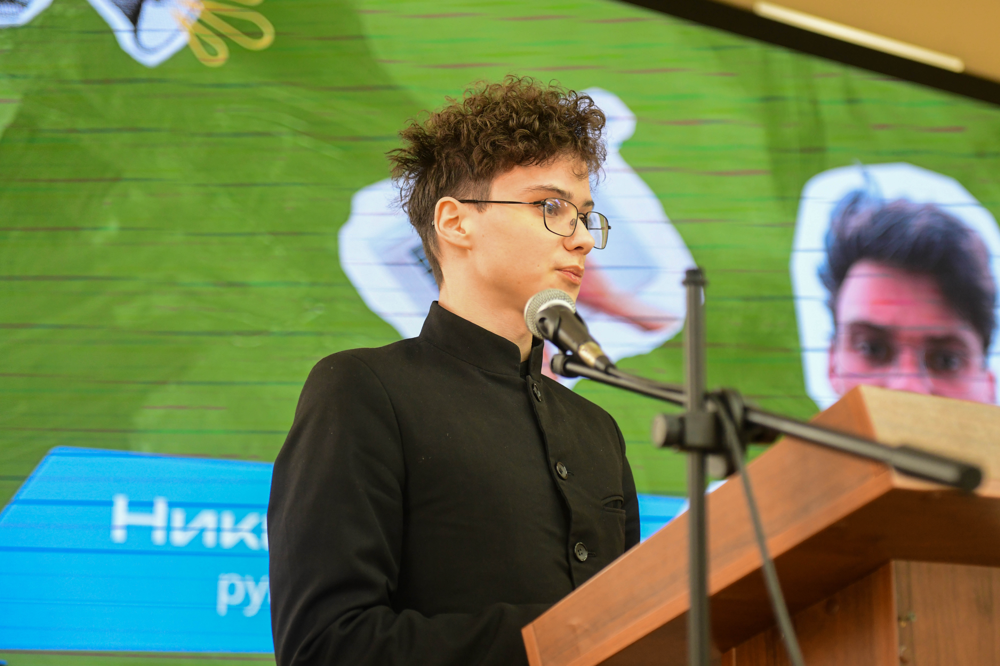

Наша команда

Никита Кулагин
Основатель проекта
Запустил «Память Поколений» в 2024 году. Отвечает за стратегию, медиа, мероприятия и развитие проекта.

Ксения Шильникова
Заместитель руководителя
Помогает в стратегическом планировании проекта и координирует ключевые направления работы команды.

Дарья Куликова
SMM-специалист
Отвечает за продвижение проекта в соцсетях, ведение страниц, создание визуального контента и вовлечение аудитории.

Ксения Чернобровкина
Методист
Разрабатывает образовательные программы и методические материалы для участников проекта.

Пётр Беспалов
Методист
Создаёт методические материалы и проводит лекции и встречи для разных возрастных групп.

Антон Маланьев
Куратор полевой работы
Организует полевую работу, мероприятия и взаимодействие с участниками на местах.

Валерия Михайлова
Веб-дизайнер
Создаёт визуальное оформление сайта, баннеров и других материалов проекта.